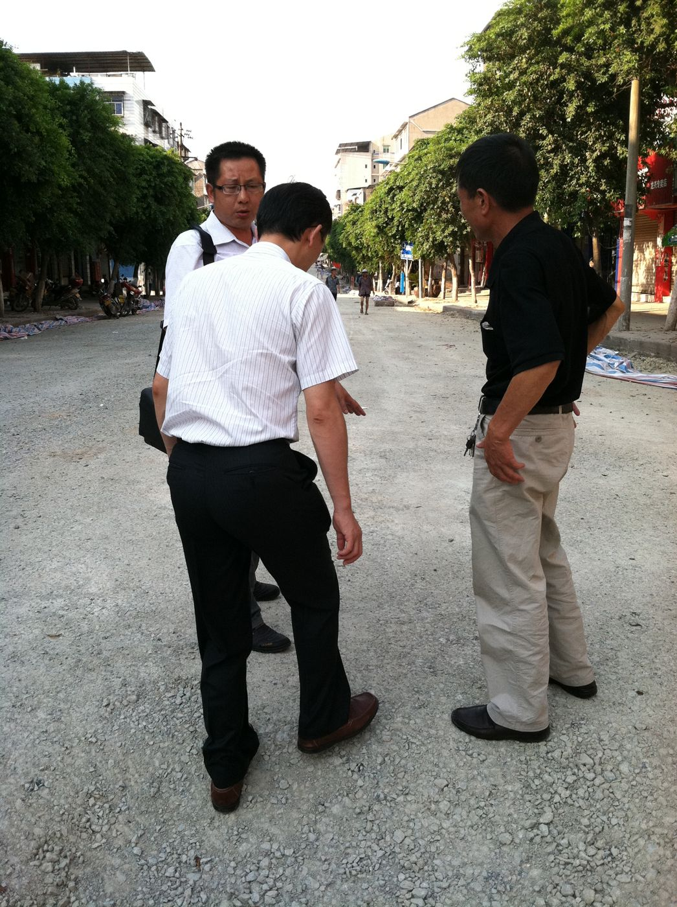
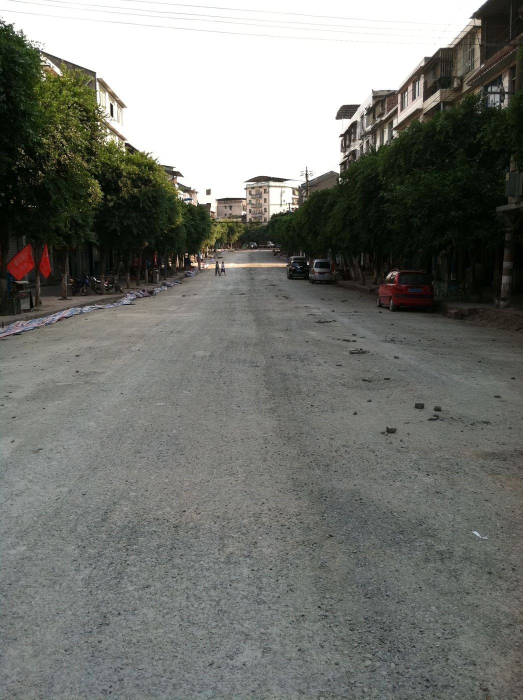

A street base outside Shanghai, graded and stabilized with the product and cement in 2012, with a written demonstration specification prepared for the City of Shanghai. The record shows the base work and the spec; it does not show a finished street, and this page says so.
The photo record is two frames from 2012: a delegation inspecting the graded, unpaved street base, and the full stabilized base running through a tree-lined commercial street, captioned in the source deck as "Base Stabilization outside Shanghai, China 2012" and "China street base in conjunction with SSPMB and cement."
Alongside the photos, a demonstration work specification survives, written for the City of Shanghai PMB Road Renewal Demo: pulverize the existing base to a minimum 5 inches, apply PMB at 0.65 gal/SY at 4:1 water dilution to 5–8% optimum moisture, surface with emulsion coats and a hot-mix wear course, Wirtgen 2400 / Cat RM300-class recycler, minimum 50°F, four-hour traffic closure.

